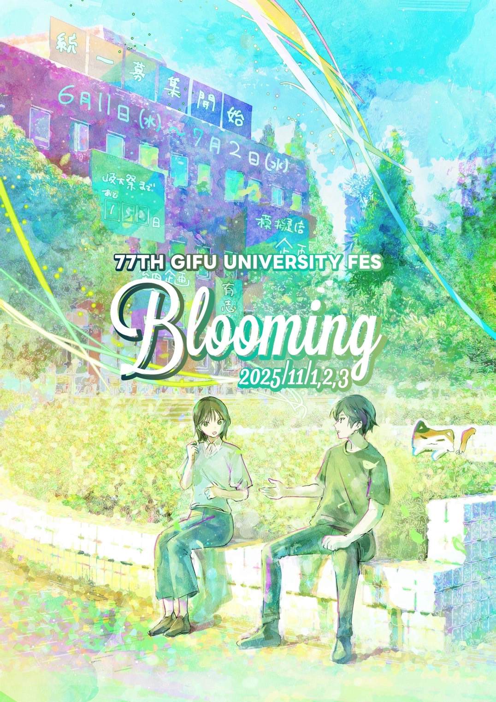

Blooming ― さらなる挑戦と成長の3日間
岐大祭とは？
第77回岐阜大学祭は、岐阜大学で3日間にわたり開催される地域最大級の学園祭です。 学生による多彩な企画や模擬店がキャンパスを彩り、地域のみなさまと一緒に作り上げる特別な時間が広がります。
テーマ「Blooming」に込めた想いとともに、岐阜大学生の新たな挑戦をぜひご体感ください。
岐大祭マスコットキャラクター
ぎだにゃん
岐大祭を盛り上げる公式マスコット「ぎだにゃん」が今年も登場します。会場内の撮影スポットや、 さまざまな企画で皆さんをお迎えします。見かけたら、ぜひ声をかけてください！

会場・アクセス
- 会場
- 岐阜大学
- 住所
- 〒501-1193 岐阜県岐阜市柳戸1-1
- JR岐阜駅から
- 9番乗り場からバスで約30分
- 名鉄岐阜駅から
- 5番乗り場からバスで約30分
お問い合わせ先
ご不明点がございましたら、各担当までお気軽にお問い合わせください。（★ を @gmail.com に置き換えてください）
模擬店企画
有志局 模擬店部
77gidaisai+mogiten★
有志ステージ企画
有志局 有志ステージ部
77gidaisai+stage★
屋内企画
有志局 屋内部
77gidaisai+okunai★
その他・渉外
渉外局
77gidaisai+ext★
- 主催
- 全学行事団体 岐阜大学祭実行委員会
- 所在地
- 〒501-1193 岐阜県岐阜市柳戸1-1 岐阜大学 大学会館内